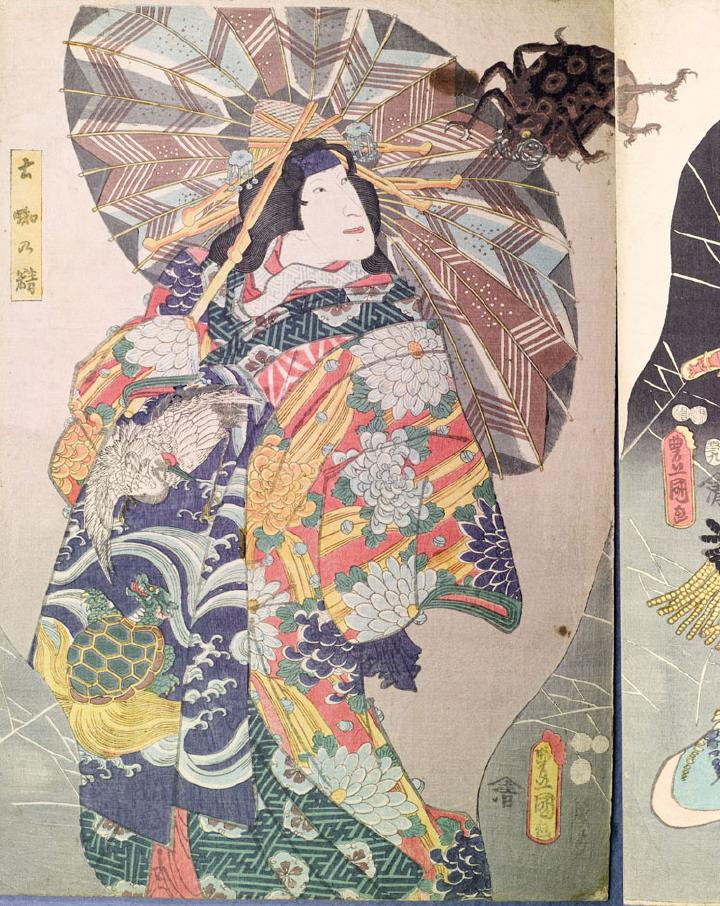

土蜘蛛；ツチグモ，蜘蛛；クモ，女；オンナ

土蜘蛛の精。髪を結って、大きな簪を挿し、菊の模様の着物を着て、鶴亀模様の帯を締めている。矢羽模様の傘を差しており、その上に黒い蜘蛛が乗っている。蜘蛛の体は丸く、脚は6本で、爪が鋭い。目玉は黄色く、開いた口に歯が並んでいる。
著作者：豊國（歌川國芳）／出典：親書誌：U426_nichibunken_0141：小栗判官車街道；オグリホウガンクルマカイドウ／日付：2009／資源識別子：U426_nichibunken_0141_0001_0000
Copyright (c)2010- International Research Center for Japanese Studies, Kyoto, Japan. All rights reserved.